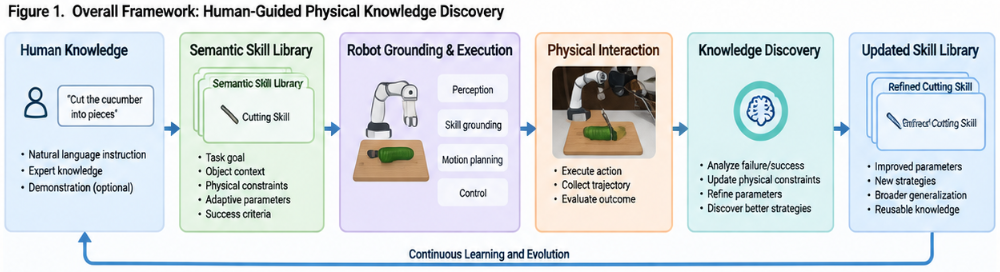
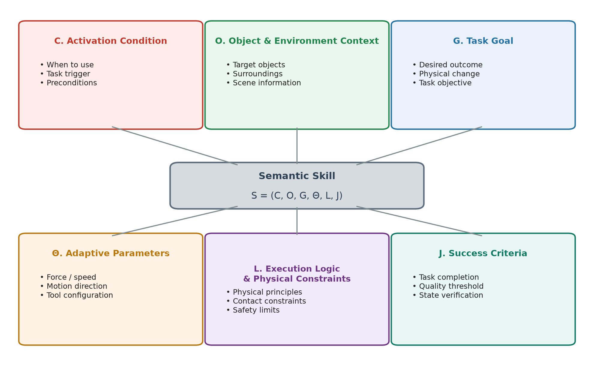
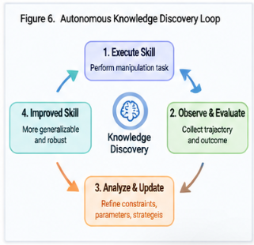
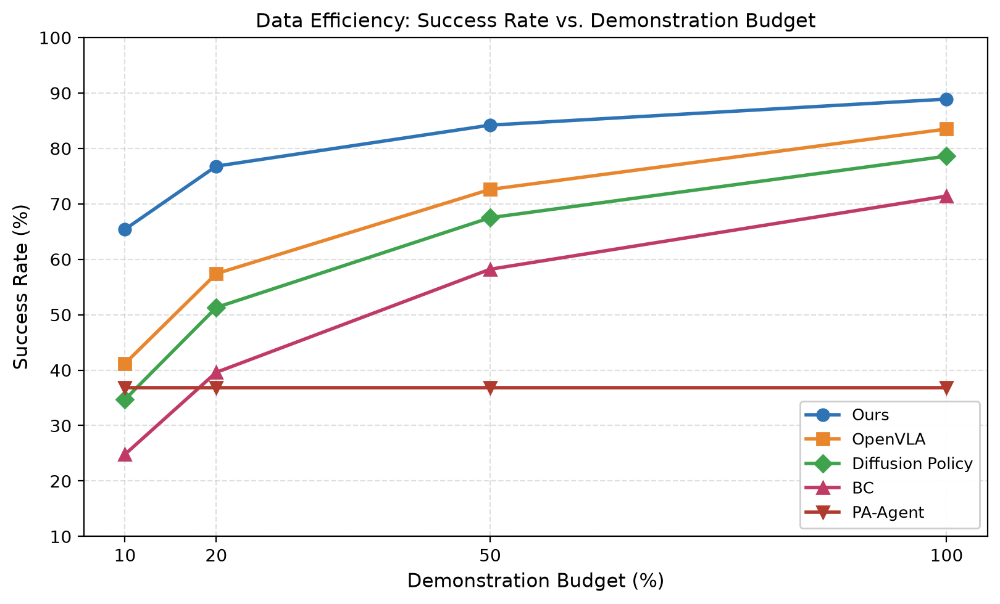
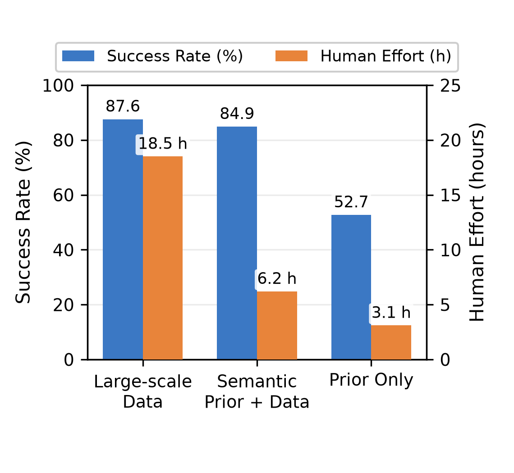

Starting from human-authored physical concepts, the robot reaches competitive manipulation with a fraction of the demonstrations and keeps improving on its own.
Physical knowledge must be human-interpretable and robot-executable at the same time, then updated in both continuous and discrete spaces.

Each skill is a reusable unit of physical knowledge — not a fixed trajectory — defined as S = (C, O, G, Θ, L, J). The same tuple grounds to different trajectories depending on the observed object, so one cutting skill covers cucumber, carrot, tofu, bread, apple, and cheese.

A conditional diffusion policy translates the skill embedding and observation-adapted parameters into action chunks, while an impedance controller enforces the physical constraints. After each episode, knowledge is updated in two complementary spaces:
All methods are compared under identical data budgets, training steps, low-level controller, and evaluation protocol (50 randomized trials per task).

With 20% of demonstrations, our method reaches 76.8% vs. 57.4% for the strongest baseline; at 10% it holds 65.4%.

Semantic priors reach 84.9% with 6.2 h of human time — 66% less effort than the 18.5 h full-data pipeline (87.6%).
| Method | Seen | Novel | Retention |
|---|---|---|---|
| BC | 79.3 | 49.8 | 62.8% |
| Diffusion Policy | 82.1 | 57.4 | 69.9% |
| OpenVLA | 84.6 | 63.7 | 75.3% |
| Ours | 89.1 | 78.5 | 88.1% |
Trained on one object per task (e.g., apple), tested on five unseen objects without extra demos.
| Method | Initial | After 25 eps |
|---|---|---|
| Human prior only | 65.4 | 65.4 |
| RL exploration (PPO) | 65.4 | 71.4 |
| Ours (GP-UCB + LLM) | 65.4 | 82.7 |
Starting from deliberately incomplete skills, e.g. the GP raises cutting force from 15 N to 22 N for carrots and the LLM adds a blade-angle rule.
Eight tasks spanning contact dynamics, gravity and containment, geometric constraints, and fine motion control.